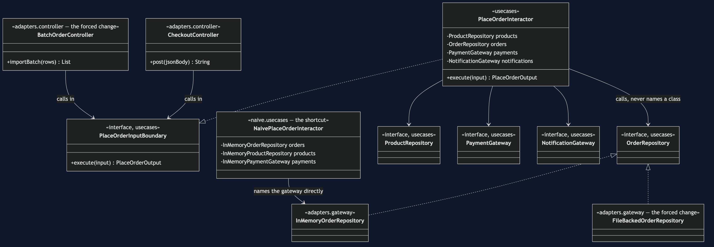
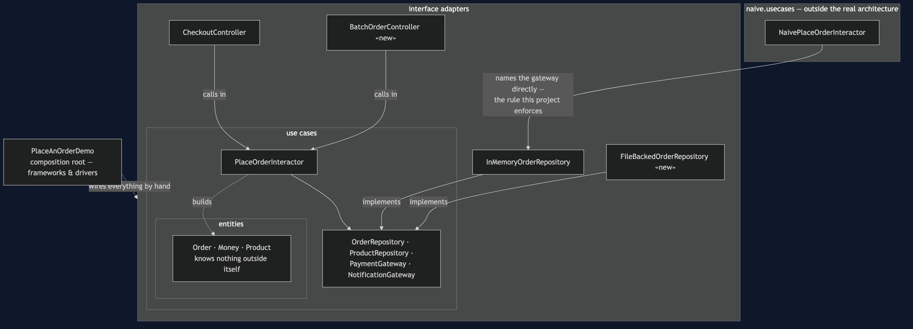
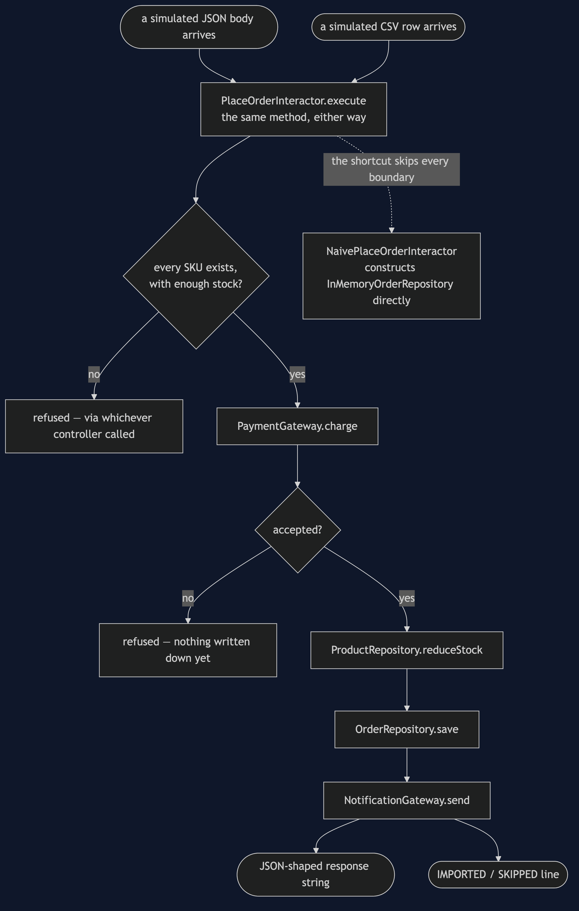
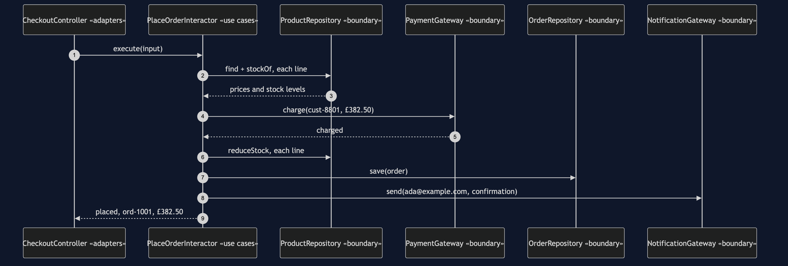
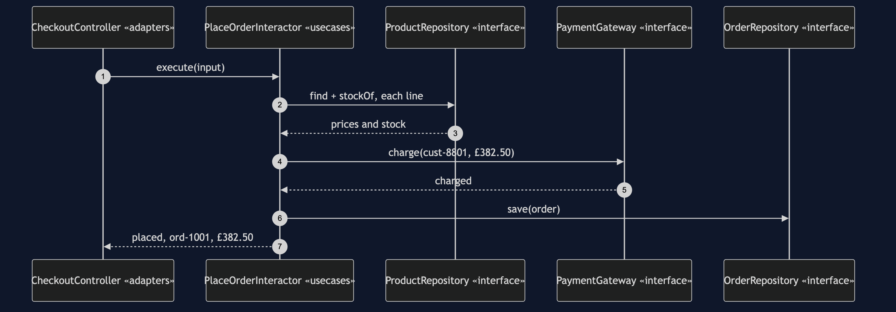
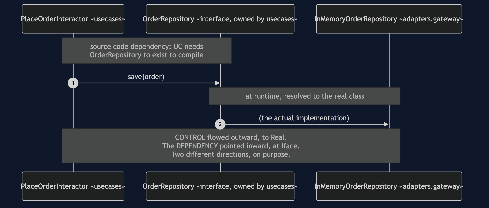
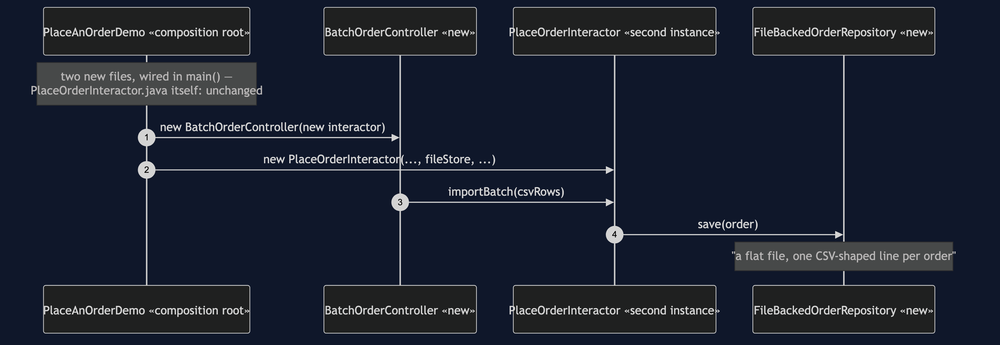
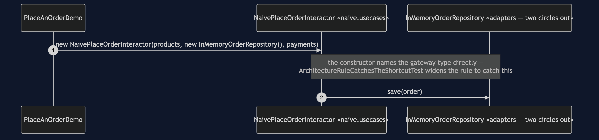

Clean Architecture Pattern
src/main/java/com/jk/explore/clean/
├── PlaceAnOrderDemo.java composition root — wires by hand, no container
├── ForcedChange.java counts the bill, from real files on disk
│
├── entities/ ← innermost circle, depends on nothing
│ └── Order, OrderLine, Money, Product, OrderStatus, CheckoutRefusedException
│
├── usecases/ ← depends only on entities
│ ├── PlaceOrderInputBoundary.java · PlaceOrderInteractor.java
│ ├── PlaceOrderInput.java · PlaceOrderOutput.java (DTOs crossing the boundary)
│ └── OrderRepository.java · ProductRepository.java ← interfaces, declared HERE
│ PaymentGateway.java · NotificationGateway.java
│
├── adapters/ ← reaches up to usecases, never the reverse
│ ├── controller/
│ │ ├── CheckoutController.java
│ │ └── BatchOrderController.java the forced change — new delivery
│ └── gateway/
│ ├── InMemoryOrderRepository.java · InMemoryProductRepository.java
│ ├── InMemoryPaymentGateway.java · InMemoryNotificationGateway.java
│ └── FileBackedOrderRepository.java the forced change — new data source
│
└── naive/usecases/ ← kept on purpose, outside the real architecture
└── NaivePlaceOrderInteractor.java the shortcut — names gateways directlysrc/test/java/.../clean/ArchitectureTest.java checks the one rule that matters, using ArchUnit's own layered-architecture API: source code dependencies point only inward, entities ← use cases ← adapters, never the other way.
Concentric circles — entities, use cases, interface adapters, frameworks and drivers — with one rule: source code dependencies point only inward.
This is project 66 of architectural-design-patterns, one step from Hexagonal Architecture — the same inversion, generalised into three named rings, with the dependency- inversion moment shown in code and the largest forced change in the category: an entirely new delivery mechanism and an entirely new data source, added at the same time.
Run
./gradlew runFive acts.
THREE. The arrow flips. The call does not.
interactor calls: orders.save(order)
orders is typed as: usecases.OrderRepository (an interface)
declared in usecases. implemented in adapters.gateway.
control flows OUT, to whichever gateway was wired in.
the dependency points IN, at an interface usecases owns.
those are two different directions, on purpose.
FOUR. Add a delivery mechanism AND a data source, at once.
IMPORTED ord-1001 £249.00
store: a flat file, one CSV-shaped line per order
PlaceOrderInteractor.java: zero lines changed.
CheckoutController.java: zero lines changed.FIVE. The rule, and the bill.
...
FORCED CHANGE: a new delivery mechanism AND a new
data source, added at the same time
HTTP-shaped checkout + a batch CSV importer
a map + a flat, file-shaped store
files added : 2 adapters/controller/BatchOrderController.java, adapters/gateway/FileBackedOrderRepository.java
files modified : 1 PlaceAnOrderDemo.java (the composition root)
lines changed : 5
classes in entities + use cases : 15
of those, opened : 0
of those, never opened : 15And the acceptance line every project in this category prints identically:
ACCEPTANCE
order ord-1001 for cust-8801: PLACED, 3 lines, £382.50
stock ESP-001 3, GRD-014 1, BNS-220 38
charged cust-8801 £382.50 once
sent 1 confirmation to ada@example.com
refused: not enough stock, unknown product, payment declinedTest
./gradlew testSixteen tests. One checks the whole concentric rule via Architectures.layeredArchitecture(); another widens an equivalent rule to naive.usecases and asserts the failure names NaivePlaceOrderInteractor. BothAddedAtOnceTest proves — rather than narrates — the forced change's claim: the original HTTP-and-map path and the new batch-and-file path both work, in the same test run, from the same PlaceOrderInteractor class.
Technologies and versions
| What | Version | Why it is here |
|---|---|---|
| Java | 21 | The repository standard |
| Gradle | 9.2.1 | The wrapper in this directory |
| JUnit 5 | 5.10.2 | Test runner |
| ArchUnit | 1.5.0 | Test-only. The concentric rule is written with Architectures.layeredArchitecture(), ArchUnit's own API for this shape |
No Spring, no dependency injection container, no real HTTP, no real file system. The whole object graph is wired by hand in main(). For the same graph assembled by a container, see clean-architecture-with-spring-pattern.
Learning Material
| Document | What it covers |
|---|---|
docs/problem-statement.md | The naive interactor, and what it costs |
docs/clean-architecture-pattern-explained.md | The four circles, the four genuine differences from Hexagonal, the inversion moment, the forced change, the bill |
docs/class-diagram.md | The types, and which arrows point inward |
docs/architecture-diagram.md | The three rings, nested |
docs/data-flow-diagram.md | One order, entering through either controller |
docs/sequence-diagram.md | Who calls whom — written for a listener with the screen off |
docs/uml-diagram.md | Four sequences: the real graph, the inversion moment isolated, the forced change, the shortcut |
docs/animation.html | Five steps in a browser |
docs/prerequisites.md | What you need to know, and what you explicitly do not |
docs/session.md | A one-hour taught session with three exercises |
docs/spec.md | The generated specification |
docs/youtube.md | Title, description and chapters |
The pattern in one picture
Four boundaries, all declared in usecases; two controllers and two gateways all pointing at the same two interfaces — the forced change made visible as a fan-in rather than a swap.

The three rings, nested
Every arrow crossing a ring boundary points toward the centre.

How one order enters from either side
Two controllers, one interactor, formatted differently only at the very last step.

Who calls whom, in order
The sequence written to work with the screen off: every name the use case speaks is a name it chose itself.

All four sequences
The full set from docs/uml-diagram.md.
One. The real graph, wired by hand.

Two. The dependency-inversion moment, isolated.

Three. The forced change — both new, nothing old touched.

Four. The shortcut — a use case that names its gateways.

Video
Built from video/scenes.py by video/build_video.sh. The rendered file is not committed.
When this is too much
This is the most over-applied pattern in the category, and the bill is correspondingly the largest. Fourteen files for one checkout feature — two DTOs, four boundaries, one interactor, two controllers, four gateways. Worth it for long-lived systems with more than one real delivery mechanism or data source, and a domain worth protecting. Not worth it for almost everything smaller than that: a CRUD screen built this way has more interfaces than behaviour.
Where this sits
Project 66 of architectural-design-patterns, one step from Hexagonal Architecture. A companion project, Clean Architecture with Spring, assembles this identical graph — same entities, same use cases, same adapters — with a container instead of by hand, to contrast compile-time wiring failure against startup-time wiring failure. It depends on this project being built and published first, since it is only legible to someone who has already seen the hand-wiring.